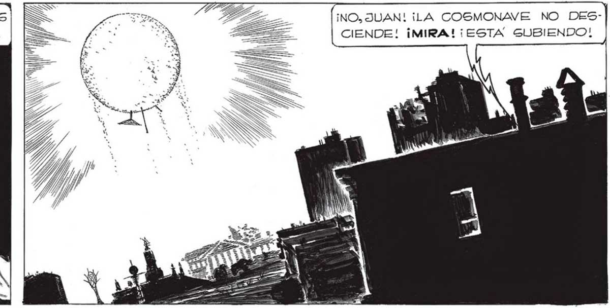

288 EG UNA COSMONAVE., SIN DUDA. EN OTRAS IGUALES VINO LA INVASION... ¡NO SON TONTOS! ¡PREFIEREN ESCAPAR ANTES QUE CORRER LA MISMA SUERTE QUE LOS OTROS! ¿QUE TE PASA AHORA, FAVA? QUIERE DECIR QUE TODO VOLVERA A EMPENO SEA TAN OPTIMISTA, | FRANCO... SEGURO QUE VOLVERAN CON REFUEREN ESA COSMONAVE VENDRAN OTROS ELLOS... INSTALARÁN OTRA CÚPULA, Y TODO GERAX COMO ANTES... Mientras COMENZABA A CORRER, NUESTRO AMIGO , NOS LANZO su EXPLICACION... DE ACUERDO CONTIGO» JUAN... TAMBIÉN YO CREO QUE VOLVAMONOG DE UNA VEZ. LOS DATOS QUE YA TENEMOS ¡NO, JUAN! ¡LA COSMONAVE NO DESCIENDE! ¡MIRA! ¡ESTA SUBIENDO! PERO... ¿NOS VAMOS GIN EXAMINAR LA CÚPULA 2 SON PRECIOSOS... Taneién A MI ME SORPRENDIO LA ACTITUD DE FAVALL!... Sl, FRANCO! ¡NOS VAMOS AHORA MISMO! HEMOS ESTADO COMETIENDO UNA IMPRUDENCIA TERRIBLE..EL PELIGRO AHORA ...
